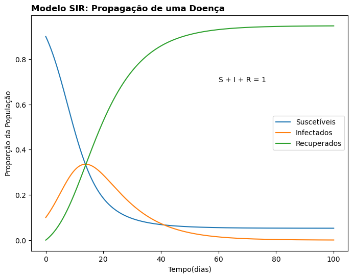

Na engenharia química, as equações diferenciais ordinárias (EDO’s) são ferramentas poderosas para modelar e compreender o comportamento de sistemas dinâmicos.
Exemplos
Cinética de Reações
Exemplos
Cinética de Reações
Balanços de Massa e Energia
Exemplos
Cinética de Reações
Balanços de Massa e Energia
Modelo de Propagação de Doenças
Objetivo
A linguagem Python possui excelentes bibliotecas para resolução de edo’s. O Scipy é um pacote científico com diversas funcionalidades para resolver sistemas, integrais numéricas, edo’s e entre outras.
Bibliotecas
import pandas as pdimport numpy as np # Algebraimport matplotlib.pyplot as plt # Gráficosfrom scipy.integrate import odeint # ODE's
Problema
Na pandemia de covid-19 foi de extrema importância o estudo de modelos para prever o comportamento do vírus em relação a população para poder melhor manejar os recursos. Um dos modelos mais simples para estudo é o SIR.
Sucetíveis
Infectados
Recuperados
Problema
Equacionamento:
\[ \frac{dS}{dt} = -\beta * S * I \]
\[ \frac{dI}{dt} = \beta * S * I - \lambda * I \]
\[ \frac{dR}{dt} = \lambda * I \]
Problema
Lembrando que:
\[ \beta:taxa \ de \ transmissão\]
\[ \lambda:taxa \ de \ recuperação\]
Problema
com o código:
def SIR(y,t): beta =0.3 gamma =0.1 S, I, R = y dSdt =-beta*S*I dIdt = beta*S*I - gamma*I dRdt = gamma*Ireturn [dSdt, dIdt, dRdt]
Cuidado com a posição dos argumentos!!!
Condições Iniciais
S0 =0.9# proporção inicial de indivíduos suscetíveis I0 =0.1# proporção inicial de indivíduos infectados R0 =0.0# proporção inicial de indivíduos recuperados y0 = [S0, I0, R0]t = np.linspace(0,100,1001) # intervalo de tempo em dias
Resultados
y = odeint(SIR, y0, t)df = pd.DataFrame(data = y, columns=['S','I','R'])df['Tempo(dias)'] = tdf.head()
S
I
R
Tempo(dias)
0
0.900000
0.100000
0.000000
0.0
1
0.897281
0.101710
0.001009
0.1
2
0.894524
0.103442
0.002034
0.2
3
0.891729
0.105193
0.003077
0.3
4
0.888896
0.106966
0.004138
0.4
Gráfico
plt.figure(figsize = (8,6) )plt.plot(t, df['S'], label='Suscetíveis')plt.plot(t, df['I'], label='Infectados')plt.plot(t, df['R'], label='Recuperados')plt.xlabel('Tempo(dias)')plt.ylabel('Proporção da População')plt.title('Modelo SIR: Propagação de uma Doença', loc ='left', fontweight ='bold')plt.annotate(text ="S + I + R = 1", xy = (60,0.7 ))plt.legend()plt.show()

Conclusão
O scipy é uma excelente biblioteca e tem uma boa interação com o numpy. Com algumas linhas de código é possível resolver problemas complexos além de ser facilmente costumisável.